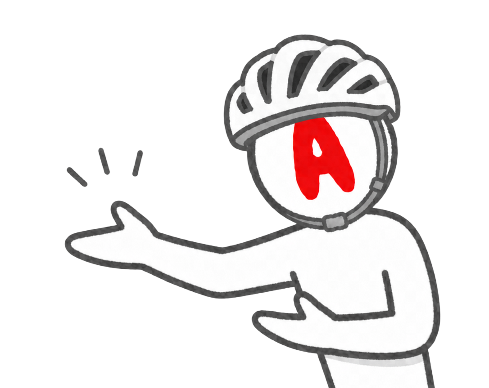
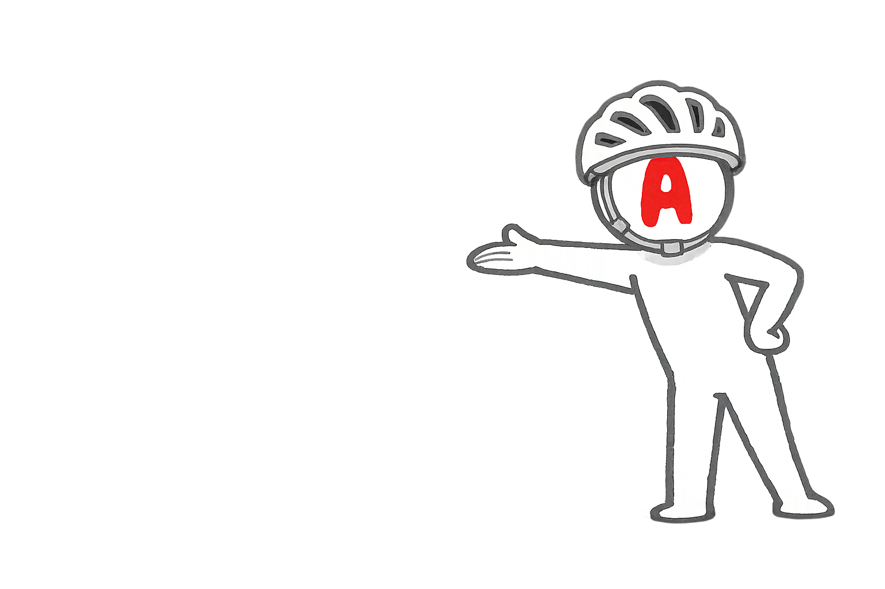
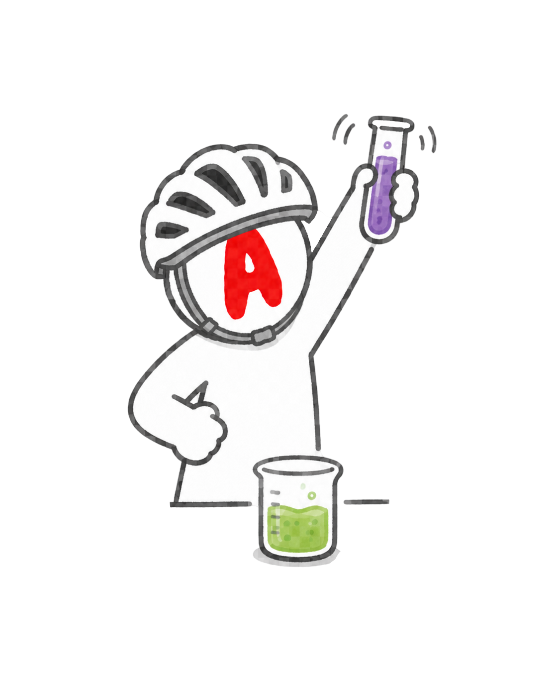
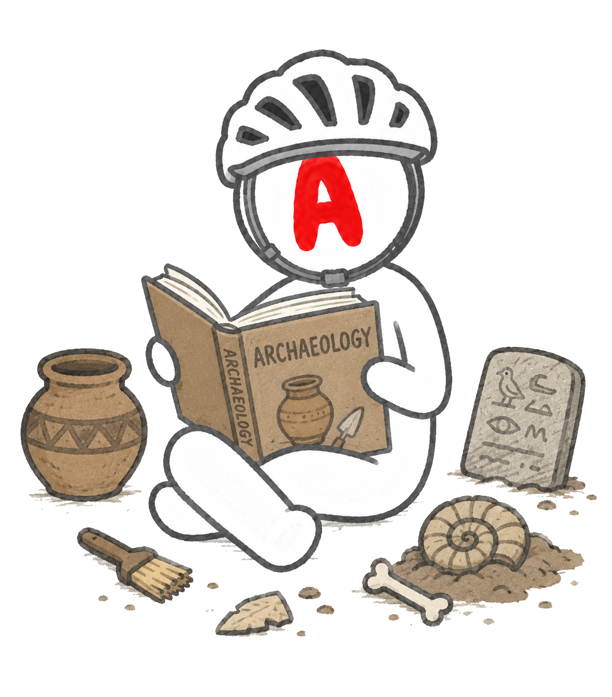

AIと喧嘩しながら
富士ヒルゴールドを目指すブログ
-
2019
熱中期
富士ヒルを1時間8分で駆け上がった。平均286W、当時67kg。
-
2023
再挑戦
もう一度走った富士ヒルは1時間16分。ゴールドは遠かった。
-
2024
再燃前夜
気づけば75kg。ちょこちょこ乗るうちに、もう少しちゃんと走りたい欲が戻ってきた。
-
2026
再起動
AIと喧嘩しながら、もう一度ゴールドリングへ。これはその実験ログ。
最新記事
実験記事、検証、旧ブログ発掘を新しい順に並べます。


8分×4本に初挑戦して撃沈。でも冬の主力にしたいと思った話
唐沢ゴルビー、SST20分×3本に続いて8分×4本へ初挑戦。1本目は296Wで走り切ったが、2本目は285Wで約1分半で中断した。原因はまだ切り分けられない。それでもメニューは気に入ったので、凍結で山に行けない冬の室内高強度の主力候補として再挑戦する。
ローラー練習 / ローラー / 8分インターバル
SST20分×3本。270ｗ出そろった！
唐沢ゴルビーの翌日、太平山は路面濡れで中止にしてローラーでSST20分×3本。前回3本目257Wまで落ちたメニューを270・271・274Wで揃えた。メニュー中はめちゃくちゃきつかったが、終わった後のダメージは前より少ない。次は上げずに再現を狙う。
ローラー練習 / ローラー / SST
唐沢ゴルビー。古峰ヶ原で覚えた「重いギアで踏む感覚」が少し生きている気がする
平均12.9℃の唐沢でゴルビー5本。寒いので1本目は321Wで抑えて入り、332・337・335W、頂上までの5本目は341W。古峰ヶ原で覚えた「重いギアをしっかり踏む」感覚が、最近の練習に少し生きている気がする。冬用ビブで下半身を温めて走った。
外ライド・実走
SST20分×3本。3本目まで完遂したら、終わった後の疲労がかなり大きかった
前回3本目を落としたSST20分×3本のリベンジ。1本目270W、2本目はリンク切れで表示267Wだが実質270W前後、3本目は257Wに落ちたものの20分を完遂。終わった後の大きな疲労は、高めの出力を長く保つ力が足りていない証拠で、ここが今の伸びしろ。
ローラー練習
初めてちゃんとベース走をやったら、1時間300Wが急に高い壁に見えた
SST翌日に、ローラーで初めてベース走として60分・212Wを一定で回した。脚は残っているのに、逃げ場のない一定出力が「なんかきつい」。回復走ではなく、ちゃんとベーストレーニングだった。212Wでも長い60分に、1時間300Wの壁の高さを体で感じた。
ローラー練習
月まとめ
1か月の練習を、数字とその月に起きたことから振り返ります。


6つの実験
読者が興味のあるテーマから入れるように、まずはこの6つで始めます。

昔の記事を、今の脚とAIで読み直す
旧ブログ「ロードバイク時々マウンテン」からWayback Machineで記事を発掘しました。 メインではなく、必要な時に今の挑戦へ接続する素材庫として使います。
